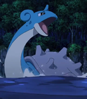

|
Abra |
|
Abra is a Pokemon from the Kanto region. Abra can sense danger by reading minds and can teleports itself to a safe loaction. Abra sleeps 18 hours each day. Rikako Aikawa voices Sabrina's Abra. |
 |
Butterfree |
- Pokemon
- Pokemon Movie 4: Pokemon 4Ever
- Pokemon Movie 5: Heroes - Latias and Latios
- Pokemon Black and White: Decolora Adventure
- Pokemon Movie 20: I Choose You!
|
Butterfree is a Pokemon from the Kanto region. It's the final form of Caterpie. Butterfree's wings are covered with poisonous powders. This powder can repel water. Rikako Aikawa voiced Ash's, AJ's and Ritche's Butterfrees. |
| |
Caterpie |
- Pokemon
- Pokemon Movie 20: I Choose You!
|
Caterpie is a Pokemon from Kanto region. Caterpie will shed its skin many times before cocooning. Its primary diet is vegetation. Rikako Aikawa voiced Ash's and Bucky's Caterpies. |
 |
Charizard |
- Pokemon
- Pokemon Black and White: Adventure in Unova
|
Charizard is a Pokemon from the Kanto region. It's the final form of Charmander. Charizard has two mega evolve forms that it can take. Its fiery breath is capable of melting boulders, massive glaciers and can cause a forest fire. Rikako Aikawa voiced Liza's Charizard. |
 |
Chikorita |
|
Chikorita is a Pokemon from the Johto region. Chikorita is a grass starter for Johto. Chikorita uses its leaf to determine the temperature and humidity of the surrounding air. Rikako Aizawa voiced Silver's Chikorita. |
 |
Eevee |
|
Eevee is a Pokemon from Kanto region. Eevee is a quadruped creature with primarily brown fur. Eevee has an irregularly shaped genetic structure that allows it to adapt to many different kinds of environments. Rikako Aikawa voiced Mikey's Eevee. |
|  |
Lapras |
|
Lapras is a Pokemon from Kanto region. Lapras is a gentle and helpful Pokemon that likes to travel the ocean. An intelligent Pokemon by being able to understood human speech. Rikako Aizawa voiced Ash's Lapras. |
| |
Metapod |
- Pokemon
- Pokemon Movie 20: I Choose You!
|
Metapod is a Pokemon from Kanto region. It is the evolved from of Caterpie. It is unable to do anything to do anything other than harden its outer shell. Rikako Aikawa voiced Ash's and Bugsy's Metapods. |
 |
Ninetales |
|
Ninetales is a Pokemon from the Kanto region. Ninetales is the final form of Vulpix. It is a very vengeful Pokemon that been known to curse anyone tht mistreat it. It can live 1,000 years cause of it nice tails. |
 |
Squirtle |
- Pokemon
- Pokemon Movie 1: The First Movie
- Pokemon: Pikachu's Summer Vacation
- Pokemon Movie 2: The Power of One
- Pokemon: Pikachu's Rescue Adventure
- Pokemon Advanced Generations
- Pokemon Sun and Moon
|
Squirtle is a Pokemon from the Kanto region. Squirtle is the water type starter that a trainer can choose in the Kanto region. It can spray foamy water from its mouth with great accuracy. Squirtle's shell is powerful tool for its protection. Rikako Aikawa voiced Ash's Squirtle. |
 |
Lucario |
- Pokemon Black and White: Rival Destinies
|
Lucario is a pokemon from the Sinnoh region. Lucario is the final form of Riolu. Lucario can mega evolve. Lucario can read and manipulate aura. It is extremely loyal to its trainer. Rikako Aikawa voiced Cameron's and Sorrel's Lucarios. |
 |
Umbreon |
|
Umbreon is a Pokemon from the Johto region. Umbreon is an evolved form of Eevee. When it gets agitated, it can release a poisonous sweat. Rikako Aikawa voiced Gladion's Umbreon. |
 |
Vaporeon |
|
Vaporeon is a Pokemon from the Kanto region. Vaporeon is an evolved of Eevee. Vapereon can melt into water at will to camouflaged as it swims. Rikako Aikawa voiced Rainer's Vapereon. |
| |
Vulpix |
- Pokemon
- Pokemon Movie 1: The First Movie
|
Vulpix is a Pokemon from the Kanto region. Vulpix changes appearances in Alola. Vuplix has a flame inside its body that never goes out. Rikako Aikawa voiced Brock's and Suzy's Vulpix |